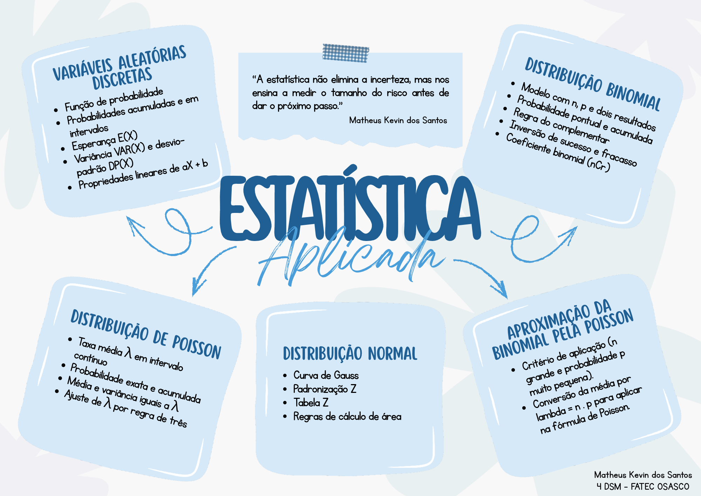

Blog
Estatístico
Início
1 · Variáveis
2 · Binomial
3 · Poisson
4 · Aproximação
5 · Normal
Mapa mental
Sobre
Visão geral
Mapa mental
Um resumo visual dos cinco tópicos e de como eles se conectam.

Mapa mental do conteúdo
← Início
Sobre o blog →